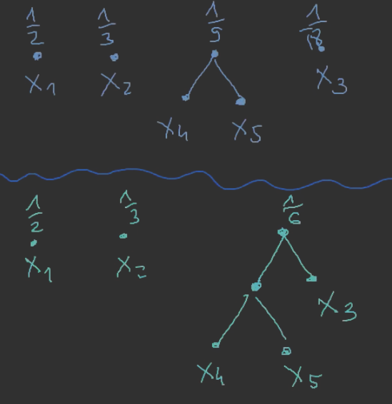
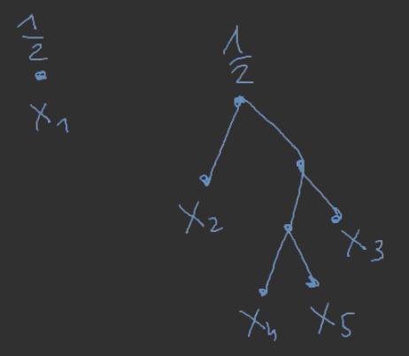
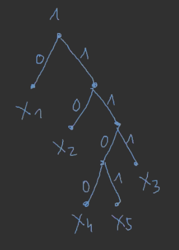

Czyli mamy las początkowy: x1∘21x2∘31x3∘181x4∘181x5∘181.
Iterujemy:



Czyli teraz możemy policzyć kody poszczególnych symboli: - c(x1)=0 - c(x2)=10 - c(x3)=111 - c(x4)=1100 - c(x5)=1101
3. Fakt o słowach kodowych Huffmana
l1≤l2≤l3≤⋯≤lN (li=∣c(xi)∣)
lN−1=LN
c(xN) oraz c(xN−1) różnią się tylko ostatnim bitem.
3.1. D-d
Punkty 2. oraz 3. są oczywiste.
(patrz przykład — pierwsze połączone wisienki)
mniej oczywiste, zaraz zostanie wyjaśnione
4. Fakt o własnościach optymalnych kodów
l1≤l2≤l3≤⋯≤lN
lN−1=lN
4.1. D-d
Załóżmy, że li>lj dla pewnego i<j
∣c(xk)∣=lk.
Robimy kodowanie c~:
c~(xi)=c(xj)c~(xj)=c(xi)
c~(xk)=c(xk) dla k∈/{i,j}
lc~=∑k=1Npkl~k=∑k=i,jpkl~k+pil~i+pjl~j=∑k=j,ipklk+pilj+pjli<∑kpklk,
ponieważ pilj+pjli<pili+pjlj, pi(lj−li)<pj(lj−li), pi>pj
(ostrość!)
generalnie pi<pj⟹li≤lj
Jeśli lN=lN−1, to ln>lN−1 oraz lN jedyna;
tzn. {N}={i:li=lN}
c(xN)=ε1ε2…εlNc~(xN)=ε1ε2…εN−1 c~(xk)=c(xk) dla k<N L~<Lsprzeczność
Eureka: c~ jest prefiksowy!
5. Fakt#3
Istnieje kod optymalny c (dla p1≥p2≥p3≥⋯≥pN) spełniają warunki: 1. l1≤l2≤…lN 2. lN−1=lN 3. c(xN) oraz c(xN−1) różnią się tylko ostatnim bitem.
5.1. D-d
Punkty 1. i 2. OK.
Aby zrobić 3., trzeba zmodyfikować kod optymalny, który mamy c′.
Liczby l1,…,lN spełniają nierówność Kraft’a. Można zrobić kod prefiksowy spełniający dodatkowo punkt 3.
□
6. Twierdzenie o kodach Huffmana
— Kody Huffmana są optymalne!
6.1. D-d
(przez indukcję względem N; N=1,2 nie sprawia problemu)
Mamy {p1,p2,…,pN} i robimy {q1,q2,…,qN−1} gdzie qi=pi dla i≤N−2; qN−1=pN−1+pN.
Niech: - LN∗ — średnia długość optymalnego kodu (prefiksowego) dla p. - LN−1∗ średnia długość optymalnego kodu (prefiksowego) dla q.
LN — średnia długość kodu Huffmana dla p.
LN=∑i=1NpilI=∑i=1N−2pili+(pN−1+pN)lNpN−1lN−1+pNlN=(∗)
i niech: - pN−1+pn=qk′ („′”, bo uporządkowane) - lN=lN−1=lk′+1